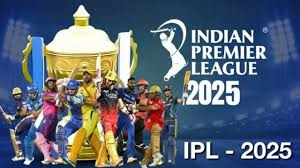
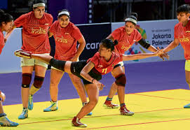
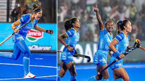

IPL 2k25 blog

Posted on 2january 2025.
Ahead Of IPL 2025, MS Dhoni Breaks Silence On Future.
Says "Whatever Few Years..." MS Dhoni will be playing
as an uncapped player for Chennai Super Kings in IPL 2025.
Kolkata Knight Riders (KKR) will take on Royal Challengers
Bengaluru (RCB) in the opening match of IPL 2025, on March 22.
kabadi blog

Posted on 22 feb 2025.
Kabaddi is one of the oldest sports in India
and has been played for more than 4000 years.
It is a team game that requires a lot of energy, strength, and teamwork.
The game is played between two teams, with seven players on each side.
Hocky blog

Posted on 5 may 2025.
Hockey is the national game of India. Also, it is a
popular game and an interesting game that many countries play.
The game has many rules that need to be followed by
each team so that a fair play can be conducted.
There are different varieties of this game played across the globe.
chess blog

Posted on 22 feb 2025.
Chess is an abstract strategy board game for two players which
involves no hidden information and no elements of
chance. It is played on a square game board
called a chessboard containing 64 squares arranged in an 8×8 grid.